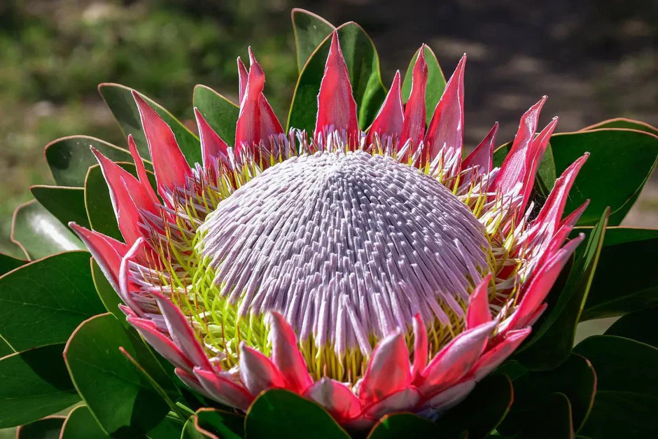

Featured Flower: Protea
The Protea, often referred to as the "King of Flowers," is a symbol of change and hope.
Native to South Africa, it represents diversity and courage. These ancient flowers have existed for over 300 million years!

Featured Flower: Daisy
Daisies symbolize innocence and purity, bringing a touch of simplicity to any garden.
The name "Daisy" comes from "day's eye" because the flower head closes at night and opens in the morning.

Featured Flower: Sunflower
Sunflowers are known for their "heliotropism," meaning they turn their faces to follow the sun.
A single sunflower can contain up to 2,000 seeds and is a vital source of energy for birds and humans alike.

Featured Flower: Rose
The Rose is the universal symbol of love and passion, adored for its fragrance and elegance.
Roses are one of the oldest flowers in the world. Fossil evidence shows they have been around for 35 million years!

Featured Flower: Lavender
Known for its calming scent, Lavender is a staple in gardens meant for relaxation and peace.
The name comes from the Latin 'lavare,' meaning 'to wash.' Ancient Romans used it to scent their baths.

Featured Flower: Orchid
Orchids represent luxury and strength, boasting some of the most intricate designs in nature.
With over 25,000 species, Orchids are one of the largest plant families. Some can even live up to 100 years!